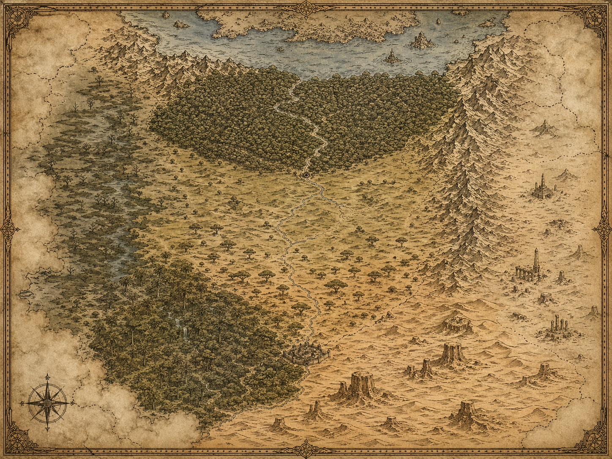

En levande krönika över Aduro och Nari — deras bedrifter, bakslag och äventyr i ett land av vargar, gudar och lösta mysterier. Uppdateras efter varje session.
Två hjältar bundna av äventyr och öde — en drakonblod-trollkarl och en listig skurk.
Kampanjens hela dokumentation: karaktärer, platser, NPC:er, uppdrag och händelser. Klicka en sektion för att öppna kapitlet.
Världen som gruppen utforskar. Klicka på en nål för att läsa mer om platsen i wikin.

Kampanjens händelser session för session — senaste sessionen högst upp.